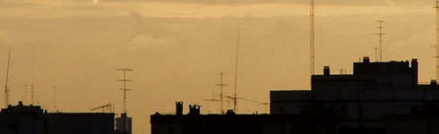
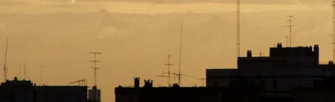

Κεραίες T.V.
Περιλαμβάνει την εγκατάσταση κεραιών τηλεόρασης υψηλών προδιαγραφών σε σημείο τέτοιο ώστε να λαμβάνει το ισχυρότερο δυνατό σήμα.

Περιλαμβάνει την εγκατάσταση κεραιών τηλεόρασης υψηλών προδιαγραφών σε σημείο τέτοιο ώστε να λαμβάνει το ισχυρότερο δυνατό σήμα.
